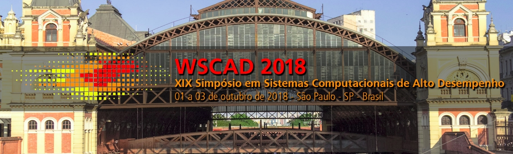

Programa do WCH
Workshop em Computação Heterogênea
Anais
A versão pré-impressão dos anais do WCH 2018 está disponível para download no link abaixo:
Programação
02/10/2018 (Terça-feira) - Labs 3x
WCH Workshops
| Horário | Atividade | ||
|---|---|---|---|
| WCH Workshops | 09:00 - 10:30 |
Workshop HardCloud(Prédio 33 Sala 103) |
Workshop NVIDIA(Prédio 33 Sala 104) |
03/10/2018 (Quarta-feira) - Sala C
WCH S1 (Chair: Ricardo Menotti (UFSCar))
| Horário | Título/Autores | Arquivos | |
|---|---|---|---|
| WCH S1 | 9:00 - 9:15 |
Escalonamento de Tarefas usando Implementações Híbridas GPU/CPU das Heurísticas Min-min e Max-min no CloudsimRafael Schmid (IFMS - Brazil) e Edson Cáceres (UFMS - Brazil) |
[slides] [artigo] |
| 9:15 - 9:30 |
πFlowMR - a scalable dataflow prototype, implemented in a low cost FPGA clusterJosé da Silva Junior (University of Sao Paulo - Brazil), Paulo Matias (Universidade Federal de São Carlos - Brazil) e Carlos Ruggiero (University of Sao Paulo - Brazil) |
[slides] [artigo] |
|
| 9:30 - 9:45 |
Avaliação de Desempenho do Montador DALIGNER em Arquiteturas ManycoreEvaldo B. Costa (Federal University of Rio de Janeiro - Brazil), Gabriel P. Silva (UFRJ - Brazil), Marcello Teixeira (Universidade Federal do Rio de Janeiro - Brazil) |
[slides] [artigo] |
|
| 9:45 - 10:00 |
Uso de Ferramenta de Autotuning para ajuste nas dimensões de kernels em Dispositivos Aceleradores (GPUs)João Martins de Queiroz Filho (UTFPR - Brazil), Rogério Gonçalves (Universidade Tecnológica Federal do Paraná - UTFPR - Brazil), Alfredo Goldman (IME - USP - Brazil) |
[slides] [artigo] |
|
| 10:00 - 10:30 | Palesta: Desenvolvendo aceleradores em FPGAs via PCIe com BluespecProf. Dr. Paulo Matias e Prof. Dr. Ricardo Menotti |
||
WCH S2 (Chair: Paulo Matias (UFSCar))
| Horário | Título/Autores | ||
|---|---|---|---|
| WCH S2 | 13:30 - 13:45 |
Uma Análise do Impacto das Transferências de Dados em Aplicações OpenMP 4.5 em uma GPU de Baixo ConsumoRafael Gauna Trindade (Universidade Federal de Santa Maria - Brazil), Bruno Muenchen (Universidade Federal de Santa Maria - Brazil), João Vicente Ferreira Lima (Universidade Federal de Santa Maria - Brazil) |
[slides] [artigo] |
| 13:45 - 14:00 |
Aceleração por Hardware para solução das equações de Black-Scholes por método Monte CarloThadeu Melo (Universidade de São Paulo - Brazil), Erinaldo da Silva Pereira (University of São Paulo - Brazil) |
[slides] [artigo] |
|
| 14:00 - 14:15 |
Um framework para agrupar funções com base no comportamento da comunicação de dados em plataformas multiprocessadasRafael Santos (Instituto de Ciências Matemáticas e de Computação Universidade de São Paulo - Brazil), Vanderlei Bonato (University of São Paulo - USP - Brazil) |
[slides] [artigo] |
|
| 14:15 - 14:30 |
Modelo de Predição de Desempenho Integrado à Exploração do Espaço de ProjetosLiana Duenha (Universidade Federal de Mato Grosso do Sul - Brazil), Ricardo Santos (Federal University of Mato Grosso do Sul - Brazil), Thiago de Oliveira (Universidade Federal de Mato Grosso do Sul - Brazil), Rhayssa Sonohata (Universidade Federal de Mato Grosso do Sul - Brazil), Mateus Tostes dos Santos (Faculdade de Computação - UFMS - Brazil), Casio Krebs (Universidade Federal de Mato Grosso do Sul - Brazil) |
[slides] [artigo] |
|
| 14:30 - 14:45 |
A Flexible Instruction Set Architecture Filter for Custom Soft-core ProcessorsErinaldo Pereira (USP/ICMC - Brazil), Carlos Oliveira de Souza Junior (Universidade de São Paulo - Brazil), Thadeu Melo (Universidade de São Paulo - Brazil), Eduardo Marques (Institute of Mathematics and Computation - RCL (Reconfigurable Computing Labs) - Brazil) |
[slides] [artigo] |
|
| 14:45 - 15:00 |
Integrando o MetaTrader5 com Aceleradores FPGA via OpenCL Named PipesClaudio Costa (Universidade de São Paulo - Brazil), Leandro Rosa (The University of São Paulo - Brazil), Vanderlei Bonato (University of São Paulo - USP - Brazil) |
[slides] [artigo] |
|
Premiação
Melhor Artigo do WCH 2018:
Modelo de Predição de Desempenho Integrado à Exploração do Espaço de ProjetosLiana Duenha (Universidade Federal de Mato Grosso do Sul - Brazil), Ricardo Santos (Federal University of Mato Grosso do Sul - Brazil), Thiago de Oliveira (Universidade Federal de Mato Grosso do Sul - Brazil), Rhayssa Sonohata (Universidade Federal de Mato Grosso do Sul - Brazil), Mateus Tostes dos Santos (Faculdade de Computação - UFMS - Brazil), Casio Krebs (Universidade Federal de Mato Grosso do Sul - Brazil) |